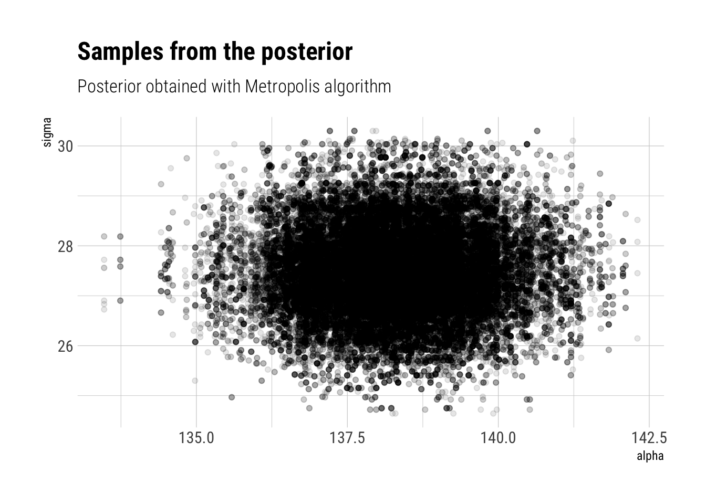
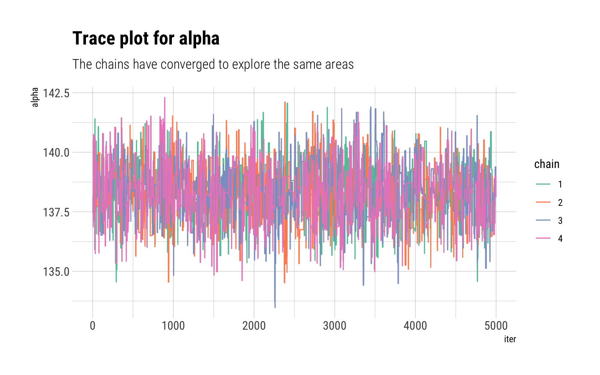
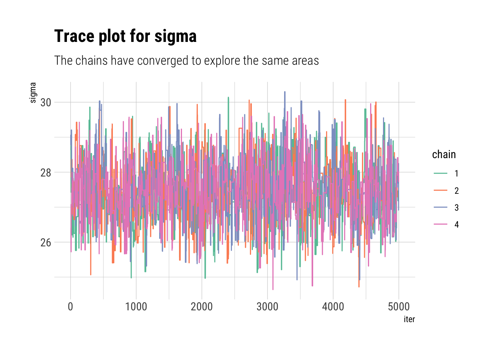

Bayesian Data Analysis (Gelman, Vehtari et. alter) is equals part a great introduction and THE reference for advanced Bayesian Statistics. Luckily, it’s freely available online. To make things even better for the online learner, Aki Vehtari (one of the authors) has a set of online lectures and homeworks that go through the basics of Bayesian Data Analysis.
So far in the course, we have seen how the main obstacle in the way of performing Bayesian Statistics is the computation of the posterior. Thus, we must ask ourselves: if we cannot fully compute the posterior, but we can evaluate an unnormalized version, how can we approximate the posterior distribution?
In this week, we started analyzing a promising alternative: Monte-Carlo Markov Chains (MCMC). In this blogpost, I’ll give a succinct overview of the most basic MCMC algorithm: the Metropolis Algorithm and quick example of it with some real data.
A Monte-Carlo Markov Chain
The Metropolis Algorithm is just a random walk through parameter space. At each iteration of the algorithm, say \(t\), where we are depends only on where we were at \(t-1\). That is \(P(\theta_t | \theta_{t-1}, \theta_{t-2}, \cdots, \theta_{0}) = P(\theta_t | \theta_{t-1}\). This is the Markov part. At each time step, then, we must define transition distribution: the probability of \(P(\theta_t | \theta_{t-1})\).
The Monte-Carlo part comes because we use these different samples \((\theta_{t-1}, \theta_{t-2}, \cdots, \theta_{0})\) to estimate the posterior distribution. We can only do this if at time step \(T \to \infty\), \(P(\theta_T) = P(\theta_T | y)\). That is, if the stationary distribution (the probability that we are at any given point in time \(T\)) is the target posterior distribution. The challenge then, is how to engineer each transition distribution such that the stationary distribution is the posterior. We will check how the Metropolis algorithm solves this problem with a numerical example.
If we can construct such a Markov Chain, then our Monte-Carlo estimates using these samples will be asymptotically consistent. However, two problems arise: first, there’s an auto-correlation in our samples from the Markov chains. Although the Central Limit Theorem still holds, our effective sample size for our Monte-Carlo estimates will be lower than our number of Markov Chain iterations. Secondly, we cannot know if we have run the Markov Chain long enough such that our samples are in proportion according to their stationary distribution: that is, we cannot know if the chains have converged toward the posterior distribution. We will check both problems with convergence diagnostics once we have worked out a numerical example of the Metropolis algorithm.
The Metropolis Algorithm
The Metropolis algorithm is thus defined. A random walk through parameter space such that at each iteration of the Markov Chain, our samples are corrected such that they approximate our posterior distribution. In particular, begin at some point \(\theta_{0}\). Then, we generate a proposed move by direct sampling from a proposal distribution: say a normal centered around \(\theta_{0}\). The suggestion then is \(\theta^*\). We will then decide if we move to \(\theta^*\) by comparing the ratio of unnormalized posterior distribution densities at \(\theta^*\) and \(\theta_{0}\).
\[
r = \dfrac{q(\theta^*|y)}{q(\theta_0| y)}
\] Which, given that both are normalized by the same constant in the posterior distribution, is equivalent to comparing the posterior densities at both points:
\[
r = \dfrac{q(\theta^*|y)}{q(\theta_0| y)} = \dfrac{q(\theta^*|y) / \int q(\theta|y) d\theta}{q(\theta_0| y)/ \int q(\theta|y) d\theta} = \dfrac{p(\theta^*|y)}{p(\theta_0 | y)}
\] Finally, we decide whether to move to \(\theta^*\) by a Bernoulli trial with probability \(min(r, 1)\). That is:
if the proposed jump increases the posterior (\(p(\theta^*|y) > p(\theta_0|y)\)), then our Markov Chain moves to \(\theta^*\) and we set \(\theta_t = \theta^*\).
if the proposed jump decreases the posterior (\(p(\theta^*|y) < p(\theta_0|y)\)), then our Markov Chain then we may or may not move to \(\theta^*\). The probability that we do move decreases as the decreased density resulting from the jump increases.
Therefore:
The Metropolis algorithm can thus be viewed as a stochastic version of a stepwise mode-finding algorithm, always accepting steps that increase the density until it finds the mode and then only sometimes accepting steps that decrease the posterior density.
Thus, as long as the algorithm has run long enough to find the posterior mode, and the area around the mode is a good representation of the overall posterior, the Metropolis Algorithm will work.
An example of the Metropolis Algorithm
The data come from the excellent Bayesian course Statistical Rethinking. Which is the best statistics course that I’ve ever taken.
Therefore, if our proposal algorithm is a normal centered around the past iteration with scale of 5 for \(\mu\) and scale of 2 for \(\sigma\), the metropolis algorithm can be written thus:
density_ratio <-function(alpha_propose, alpha_previous, sigma_propose, sigma_previous) {exp(log_unnormalized_posterior(alpha_propose, sigma_propose) -log_unnormalized_posterior(alpha_previous, sigma_previous))}single_metropolis <-function(total_iter =10000) { alpha <-vector(length = total_iter) sigma <-vector(length = total_iter) alpha[1] <-runif(1, min =100, 150) # initialize the chains at random points sigma[1] <-runif(1, min =10, 40) # initialize the chains at random pointsfor (i in2:total_iter) {# sample proposal alpha_propose <-rnorm(1, mean = alpha[i-1], sd =5) sigma_propose <-rnorm(1, mean = sigma[i-1], sd =2)# compare posterior at past and proposal ratio <-density_ratio(alpha_propose, alpha[i-1], sigma_propose, sigma[i-1]) ratio <-min(1, ratio) # check whether you move bool_move <-rbernoulli(1, p = ratio)if (bool_move ==1) { alpha[i] <- alpha_propose sigma[i] <- sigma_propose }else{ alpha[i] <- alpha[i-1] sigma[i] <- sigma[i-1] } }list(alpha = alpha[5001:total_iter], sigma = sigma[5001:total_iter])}
Notice that we do not use all of our iterations. In fact, we discard half of them. The reason? At the beginning of the chain, the probabilities have not converged to that of the stationary distribution. Thus, they are not correct samples from the posterior distribution. This beginning period serves to warm-up the Chains long enough until they find the stationary distribution and start yielding usable samples from the posterior.
To run multiple chains of the Metropolis algorithm:
results_plot %>%ggplot(aes(alpha, sigma)) +geom_jitter(alpha =0.1) +labs(title ="Samples from the posterior",subtitle ="Posterior obtained with Metropolis algorithm")

Convergence Diagnostics
If we run multiple chains, we can check whether each chain converged to explore the same areas of the parameter space in the same proportions. If the chains are in not in agreement between each other, then, it’s a sure sign that the chains have yet to converge. We can visualize the path that each chain took through the parameter space with trace plots:
do.call(cbind, results$alpha) %>%data.frame(., iter =1:5000) %>%pivot_longer(-iter, names_to ="chain", names_prefix ="X",values_to ="alpha") %>%ggplot(aes(iter, alpha, color = chain)) +geom_line() +scale_color_brewer(palette ="Set2") +labs(title ="Trace plot for alpha",subtitle ="The chains have converged to explore the same areas")

do.call(cbind, results$sigma) %>%data.frame(., iter =1:5000) %>%pivot_longer(-iter, names_to ="chain", names_prefix ="X",values_to ="sigma") %>%ggplot(aes(iter, sigma, color = chain)) +geom_line() +scale_color_brewer(palette ="Set2") +labs(title ="Trace plot for sigma",subtitle ="The chains have converged to explore the same areas")

A numerical convergence-diagnostic is \(\widehat R\). It measures agreement between the chains by comparing the within chain variance \(W\) with the estimated variance using all of the available data \(var(\theta | y)\). If all of the chains have converged, \(W\) and \(var(\theta | y)\) should be equal. Thus, \(\widehat R\), which is the squared root of their ratio should be 1:
\[
\widehat R = \sqrt{\dfrac{Var(\theta | y)}{W}}
\] However, if the chains are in disagreement between each other because they have not converged, they will underestimate the total variance \(Var(\theta | y)\). Why? Because they have yet to explore the full posterior scale. Thus, \(\widehat R\) will be larger than 1. As the chains converge (as the number of iterations grows), we expect \(\widehat R\) to converge to 1 from above.
As we said before, the sample size is not equal to the number of iterations times the number of chains. There’s an autocorrelation between the samples that we must take into account to find out how many equivalent independent samples from the posterior our iterations represent. To do so, we correct the number of total iterations by the sum of all autocorrelation lags \(\rho_t\):